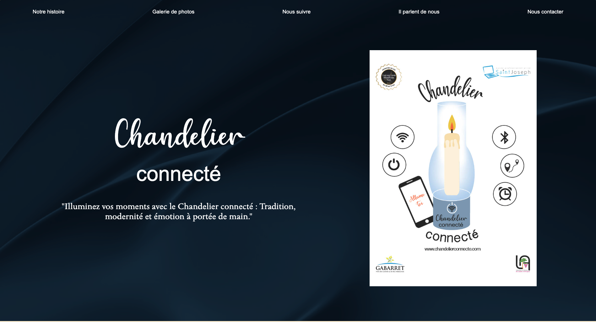
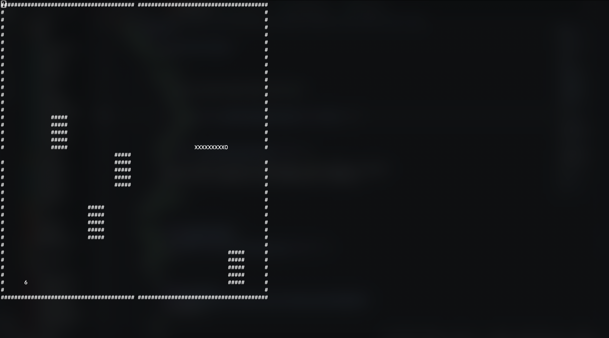

En collaboration avec Benoît Mirambeau et mon lycée, j’ai
codéveloppé un chandelier connecté, présenté au Concours Lépine
2024, où nous avons remporté l’or dans la catégorie “univers
connecté”. J’ai conçu le site web, une application mobile, et
contribué au développement du micro-logiciel pour faire fonctionner
les prototypes.
En savoir plus
Site JO Paris 2024 (BUT info)

Dans le cadre de mon BUT informatique, j’ai réalisé un projet
portant sur la création d’un site fictif dédié aux JO Paris 2024. Ce
travail m’a permis de répondre à un besoin client de manière
complète, en passant par l’analyse des exigences, la conception, le
développement et la mise en ligne. J’ai également appliqué des
méthodologies de gestion de projet pour assurer une livraison
conforme aux attentes.
Jeu snake dans le termianl

Dans le cadre de mon BUT informatique, j’ai réalisé un projet
portant sur la création du jeu snake dans le terminal. Dans cette
version, il y a des obstacle ainsi que des portes dans les bordures
du plateau qui sont des raccourcies.